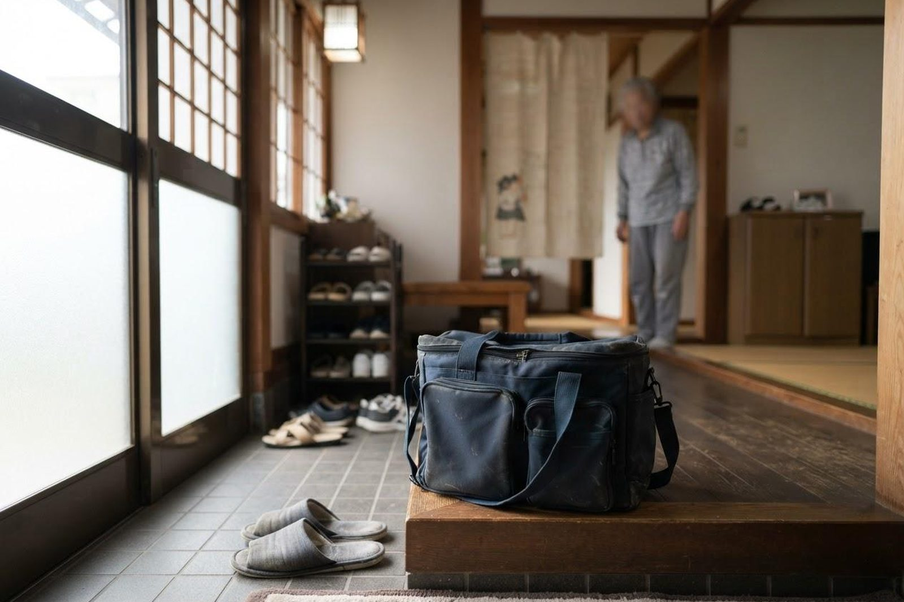
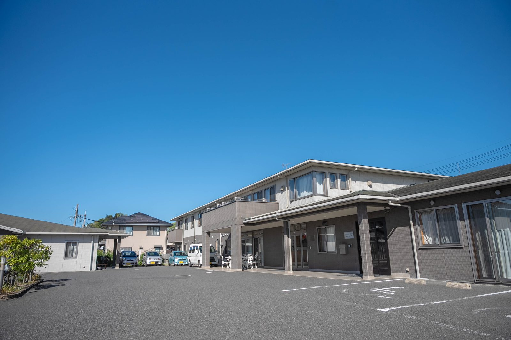

訪問介護こはる日和は、どこまで来てもらえますか？
A. 回答訪問介護こはる日和は、ホームヘルパーがご自宅にうかがい、身のまわりの介助や家事の支援を行う事業所です。通常の実施地域は倉敷市の玉島支所・水島支所の管内です。サービス付き高齢者向け住宅「メディケアビレッジかしわじま」と同じ建物にあり、ご自宅にお住まいの方にも、住宅にお住まいの方にもご利用いただいています。

ヘルパーに頼めること
訪問介護は「身体介護」と「生活援助」に分かれます。介護保険では、内容によって使えるかどうかが決まっています。
| 区分 | 主な内容 |
|---|---|
| 身体介護 | 食事、入浴、排せつの介助／着替え／体位を変える／起き上がりや移動の介助／通院時の乗り降りの介助 |
| 生活援助 | 調理／洗濯／掃除／買い物／薬の受け取り |
頼めないこと
介護保険の訪問介護は、ご本人の生活を支えるためのものです。次のような内容は対象外とされています。
- ご家族の分の食事づくり、ご家族の洗濯や部屋の掃除
- 草むしり、庭木の手入れ、ペットの世話
- 来客への対応、大掃除や模様替えなど日常的でない家事
- 金銭の管理、公的な手続きの代行
また、ご家族と同居されている場合、生活援助が使えないことや、条件がつくことがあります。ご事情によって判断が変わりますので、ケアマネジャーにご相談ください。
事業所の概要
| 項目 | 内容 |
|---|---|
| 所在地 | 〒713-8123 岡山県倉敷市玉島柏島920-14 |
| 電話 | 086-522-8787 |
| 指定年月日 | 2014年5月1日 |
| 通常の実施地域 | 倉敷市の玉島支所・水島支所の管内 |
| 営業日 | 平日（土曜・日曜・祝日と12月31日〜1月3日はお休み） |
| 営業時間 | 9時00分〜17時00分 ※ケアプランに応じて、24時間対応できる体制をとっています |
| 職員 | 訪問介護員10人（常勤換算2.9人）、サービス提供責任者1人 |
急に対応が必要になったときの訪問についても、介護報酬上の加算を届け出て体制をとっています。

医療との連携
訪問時に気づいた体調の変化を、ケアマネジャーや医院と共有しやすい体制です。いなだ医院の訪問看護や訪問診療とあわせて利用されている方もいらっしゃいます。
ご相談・お問い合わせ
- 訪問介護 こはる日和：086-522-8787
- ご相談全般：かしわじま居宅介護支援センター 086-525-0600
本ページは一般的な情報提供を目的としています。掲載している定員・営業日・費用などは、公表されている事業所情報をもとにしたもので、最新の内容と異なる場合があります。ご利用にあたっては必ず重要事項説明書をご確認ください。ご不明な点はお電話（086-525-0600）にてお問い合わせください。
お住まいの場所が対象になるか、お電話でご確認ください。
最終更新：2026年8月26日